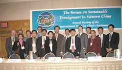
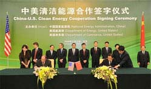

iFCE Resource
EXPERT DATABASE
IFCE EXPERT RESOURCES:
International Fund for China’s Environment has developed strong and influential expert resources and services , which provide the Chinese government with constructive suggestions on environment, energy, climate and natural resource policies and regulations.
About IFCE Expert Database:
FCE established a network of more than 2,000 international and Chinese experts in environment, energy, biodiversity and climate fields.
Benefits:
By joining IFCE expert database, you will be able to:
- Participate in scientific research, consulting projects, project evaluation and other technical support activities in China
- Collaborate directly with IFCE’s partners in China
- Receive updates on environmental news, conferences and events in US and China
- Receive invitations to attend environmental events in US and China
- Conntect with other experts in the network
How to Join:
Please join IFCE Expert Database by filling out the questionnaire. The membership fee is $100 for two years. If you have any questions, please email us at ifce.adm@ifce.org
JOIN US!PROSPECTIVE IFCE EXPERT
Fee: $100 for 2 Years.
Contact: if you are a passionate expert who wants to join us, please fill out the form and email it to ifce.adm@gmail.com We will contact you shortly.
IFCE EXPERT RESOURCES:
With dynamic experience in US-China clean technology exchange and partnership formation , International Fund for China’s Environment has helped many U.S. and Chinese companies build up multilateral investment and partnership relations.
CURRENT MULTILATERAL COMPANY PROJECT UNDERGOING
• China's North Engineering Design Institute (NORENDAR)
Norendar International Ltd .,(http://www.norendar.com/), a member of China North Industries Group (NORINCO GROUP) , is a China national multidisciplinary engineering & design company. Its core business is to offer consultant services, including pre- investment and feasibility studies ; engineering survey and reconnaissance; design and administration of construction; and project management.
• Apex Companies, LLC
Apex Companies (http://www.apexenv.com) — an environmental consulting company with 41 offices nationwide that offers comprehensive professional and field services to assess,prevent and cure environmental issues related to water , ground , facilities and air quality.
• MAPUNI
China Sciences Mapuniverse Technology Co., Ltd (http://WWW.MA PUNI.COM) A Leading Geographic Information Firm. It Is A Chinese Academy Of Sciences Industr Base For Industrialization Of Geographic Information Technology And Remote Sensing Application Technology. Mapuni Is Committed To Special Information Service And Environmental Informatization Service With Remote Sensing Technology. The Main Business Of The Firm Are Smart Map, Smart Environmental Protection, Public Service and Environmental Treatment four industrial clusters. The Firm IsHeadquartered In Beijing , Established The Institute Of Resources And Environment Science (IRES), And Other 3 Wholly Owned Subsidiaries, 3 Demonstrative Bases, 4 Branches.
CONTACT US!IFCE COMPANY DATABASE
By doing company exchange and partnership relations for over 10 years, IFCE has built up a company database that enables fast and efficient service. If you are interested in finding partners, investors in either China or US, please email ifce.adm@gmail.com for inquiries.
Following is a sample of experts in IFCE’s expert network
Water Treatment
-
Jay Borkland, Director of National Waterways and Alternative
Energy Services, Apex Inc.
Specialty: port cleanup -
Dexi Huang, Chairman of Baoding Delong Environmental Company
Specialty: Industrial waste water treatment -
John Robinson, Principal Consultant, Mandarin Environment
Specialty: Experience China strategy consultant with experience and connections in water/wastewater technologies
Air Pollution Treatment
-
Xusheng Li, Shandong Qingjing Environmental Company
Specialty: Industrial gas treatment -
Su Ge, President , Kenan Environmental Group
Specialty: Air pollution control, energy efficiency
Information Management
-
Xin Yao, Chairman, MapUni Inc.
Specialty: environmental monitoring, GIS, remote sensing -
Rui Liu, Director, Environmental Research Institute, MAPUNI Inc.
Specialty: environmental monitoring, GIS, intelligent city
Soil Remediation
-
Seong Jeon, Vice general manager, Easen International Inc.
Specialty: Soil remediation, environmental risk assessment -
Yuyang Gong, managing partner, ESD China, Inc.
Specialty: Soil remediation, environmental risk assessment
Environmental Policy
-
Hong Lan, Professor, Renmin University
Specialty: Environmental economics, carbon financing -
Jeremy Schreifels, Senior policy analyst, US EPA
Specialty: Environmental policy, air pollution prevention and control -
Hua Wang, Policy Research Center, Chinese MEP
Specialty: Environmental economics，Environmental social governance
Resource Management and Biodiversity Conservation
-
Diqiang Li, Director, Protected Area and Biodiversity Division,
Chinese Academy of Forestry
Specialty: Biodiversity conservation, resources management -
Wenli Feng, Deputy Director, Land Registration Department,
Ministry of Land Resources, China
Specialty: Land management, land development policy
CONFERENCE NEWS
- IFCE Annual Reception, Special Discussion on China's Air Pollution, U.S.-China Greener Consumption Forum ...
-
Prepare for RIO + 20, US, China, Brazil Discussed Pathways to Sust Ainable Development;
IFCE Summer Interns; Chinese Delegation Visit...